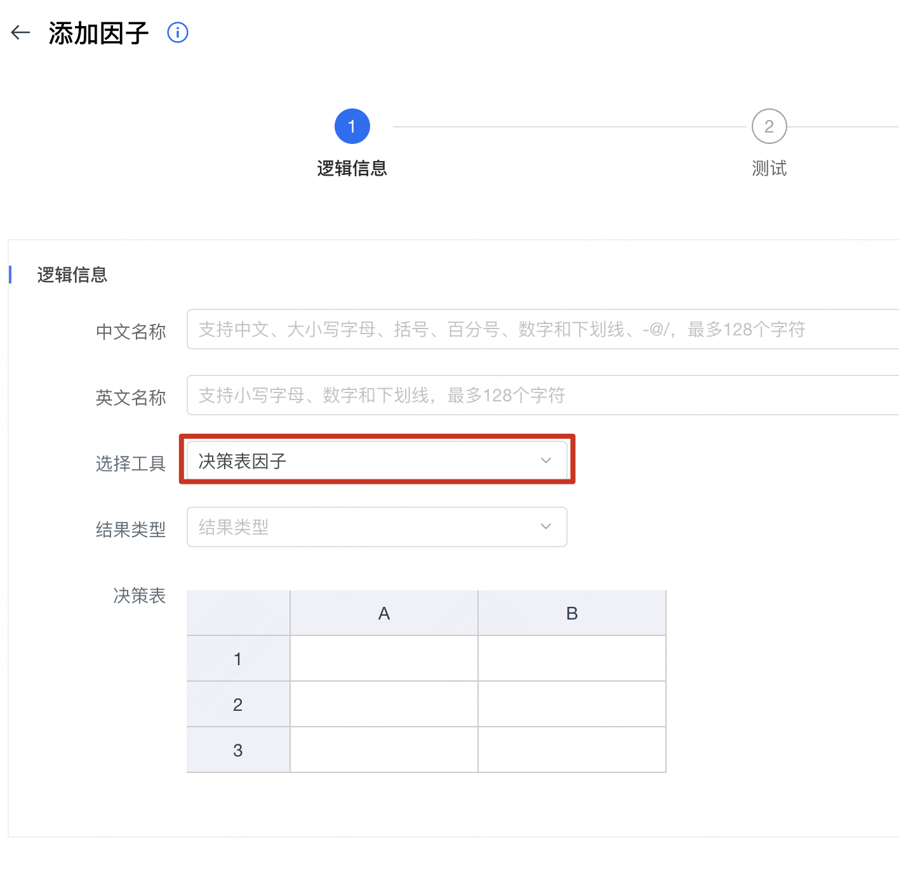
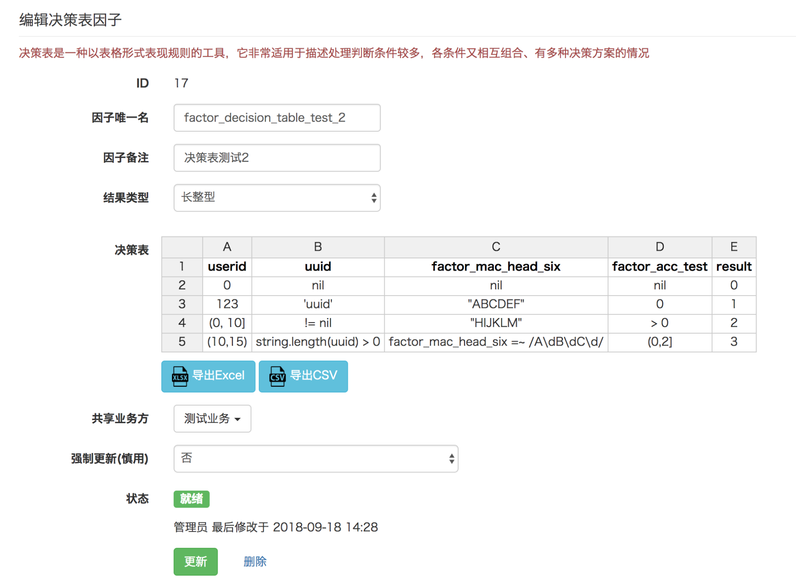
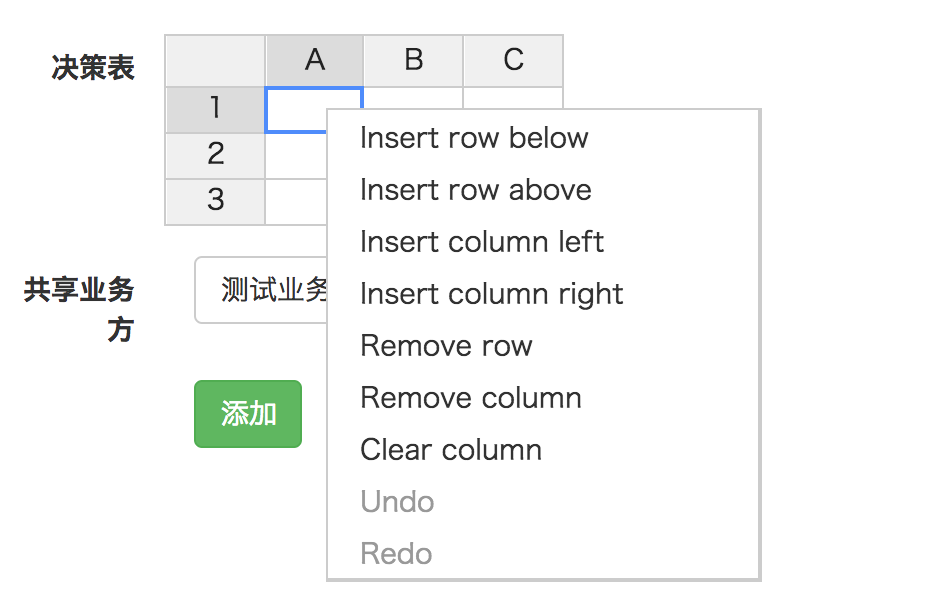
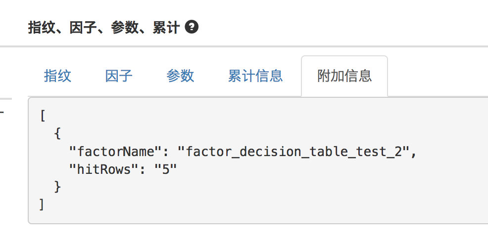

说明：Zeus决策表使用指南
配置示例


配置解释
- 决策表在Zeus中表现为新的因子类型：决策表因子
- 决策表因子除了决策表外其他属性与普通因子完全一样
- 决策表因子的决策表属性展示的是一个可动态修改的表格
- 决策表含有导出功能：导出为Excel(xlsx格式)和导出为CSV(csv格式)，点击会在浏览器直接下载到本地
决策表的功能使用
- 单击单元格为选中，直接输入会清除并覆盖单元格内容，双击单元格会在内容后追加。
- 点击1、2、3等会选中整行，点击A、B、C等会选中整列，可以动态调整行和列的宽度，但不是会记录到数据库，只会对当前页面生效
- 选中单元格，Command + C可以对内容进行复制，Command + V可以对内容进行粘贴
- 右键单击任何一个单元格，会弹出决策表的功能菜单，如下图：

从上到下分别为：
- Insert row below：下方插入行
- Insert row above: 上方插入行
- Insert column left: 左侧插入列
- Insert column right: 右侧插入列
- Remove row: 删除行
- Remove column: 删除列
- Clear Column: 清除整列的内容
- Undo: 撤销
- Redo: 重做
决策表的语法
- 决策表中所有单元格的内容都不能为空
-
决策表默认第一行为表头，用粗体显示。
- 表头分为条件列和结果列，最后一列默认为结果列，除了最后一列前面所有的列都为条件列。
- 表头中条件列中单元格内容必须为已经定义的参数或因子（因子必须是就绪的）。表头的结果列所填内容不限，Zeus没有进行检查
-
除了第一行，表格余下部分为表体
- 表体的条件列所在单元格都是Aviator表达式，表体的结果列所在单元格是要返回的结果，可以是常量或Zeus定义的参数/因子
- 表体条件列所在单元格除了支持所有的Aviator语法，还支持一些语法糖
-
决策表语法糖
-
单元格中只包含一个单独的常量或Zeus定义的参数/因子，则默认为添加相等(==)的语义。例如某单元格表达式为：123, 对应列的列头为userid，则该单元格补充为：userid == 123（上图的第3行第1列）
- 注意如果是字符串类型的常量，必须要加上单/双引号，如上图第3行第2列，单元格内容为'uuid'，等价于 uuid == 'uuid'
-
对于比较操作符，在其前面自动加上变量的语法糖。支持 >= , <= , > , < , == , != 6种操作符，例如单元格表达式为：> 0，列头为factor_acc_test，则自动转换为：factor_acc_test > 0（上图的第4行第4列）
- 只支持含有单个比较操作符的情况，不支持如下形式：> 0 && <= 6 ，可用开闭区间语法糖来代替
-
支持数字开闭区间的语法榶。支持[num1, num2] , [num1, num2), (num1, num2], (num1, num2) 四种类型
- 例如：(0, 10]，列头为userid，等价于 userid > 0 && userid <= 10（上图第4行第1列）
- 中括号是闭区间，包含等于号；小括号是开区间，不包含等于号
-
-
决策表中的单元格支持Aviator表达式，包括扩展函数，正则表达式等。
- 如上图决策中的第5行第2列，使用了string.length扩展函数，第5行第3列，使用了正则表达式。这些表达式没有实现语法糖，都需要写完整的Aviator表达式，对应的uuid和factor_mac_head_six列头变量在单元格表达式里不能缺少（例如：直接写 =~ /A\dB\dC\d/ 是不合法的）。
命中日志信息
在发生请求时，若命中了决策表的某一行，则会在日志查询附加信息栏中体现：

如上图表示名为factor_decision_table_test_2的决策表因子，该次请求命中了第5行
如果命中多行，会用逗号隔开，如："hitRows": "4,5"
若hitRows为空串则表示未命中任何一行，决策表因子结果为nil
决策表命中多行，返回命中的最后一行的结果（需求文档定义的）
暂不支持的功能说明
- 每个单元格的表达式不支持补全提示功能，因为表格插件与补全插件无法整合
- 决策表不支持合并单元格功能
- 决策表不支持否则(else)功能